20个领域，20本经典
| sn | 领域 | 名称 | 作者 |
| 1 | 社会学 | 社会学的邀请作者 | [美]乔恩•威特 |
| 2 | 政治学 | 政治科学作者 | [美] 迈克尔•罗斯金等 |
| 3 | 心理学 | 心理学与生活作者 | [美] 理查德•格里格 / 菲利普•津巴多 |
| 4 | 逻辑学 | 逻辑学十五讲作者 | 陈波 |
| 5 | 经济学 | 经济学原理作者 | [美] N 格里高利•曼昆 |
| 6 | 科普 | 从一到无穷大作者 | [美] G 伽莫夫 |
| 7 | 科学史 | 万物简史作者 | [美] 比尔•布莱森 |
| 8 | 美术史 | 艺术的故事作者 | [英] 贡布里希 |
| 9 | 哲学 | 大问题作者 | [美] 罗伯特•所罗门 |
| 10 | 伦理学 | 伦理学与生活作者 | [美] 雅克•蒂洛 / [美] 基思•克拉斯曼 |
| 11 | 中国史 | 中国通史作者 | 吕思勉 |
| 12 | 世界史 | 全球通史作者 | (美) 斯塔夫里阿诺斯 |
| 13 | 互联网与创业 | 登高四书作者 | 李善友 / 龚焱 |
| 14 | 广告 | 一个广告人的自白作者 | 大卫•奥格威 |
| 15 | 品牌营销 | 超级符号就是超级创意作者 | 华杉 / 华楠 |
| 16 | 建筑史 | 中国古代建筑史作者 | 刘敦桢 |
| 17 | 地理学 | 地理学与生活作者 | [美] 阿瑟•格蒂斯/朱迪丝•格蒂斯/杰尔姆•D•费尔曼 |
| 18 | 法学 | 法律之门作者 | [美] 博西格诺等 |
| 19 | 设计 | 写给大家看的设计书作者 | [美] Robin Williams |
| 20 | 天文学 | 大众天文学作者 | [法] C弗拉马里翁 |
20个领域，20本经典入门书， 你和另一个领域的距离，或许就只有这一本入门书的厚度！
2016年4月14日 15:36 阅读 4663
读书的目的之一，是完善我们的知识结构。好的知识结构是“T”字形的：深钻一个领域，兼顾涉猎其他，能让我们既“专”又“博”。
以下20本书，是参考媒体和书友评价，按照“入门为主，兼顾普及”的原则，选出了分属心理学，美术史，经济学，设计、天文学等20个领域的经典入门书。希望它们成为你建构自己知识大厦的基石。
为什么会挑出这20个领域呢？钻研一个领域是立足之本，涉猎其他领域则是创新之源——关于创新最重要的规律，就是它往往诞生于多领域的交叉地带。
你和另一个领域的距离，或许就只有这一本入门书的厚度。
1. 社会学
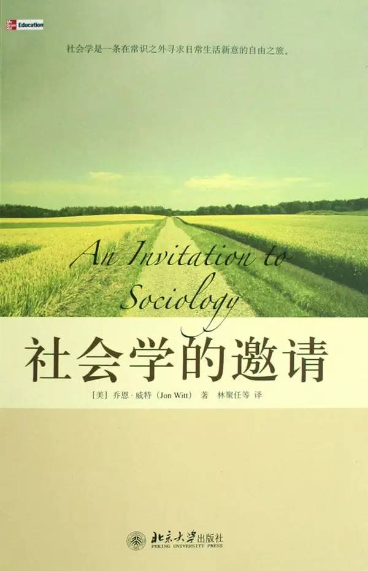社会学的邀请
作者：[美]乔恩·威特
译者：林聚任
北京大学出版社
“社会学是一条在常识之外寻求日常生活新意的自由之旅”。这本书的作者在说明一些社会学观点时，结合了影像材料和自己的亲身经历，很好地体现了这个主题。
2. 政治学
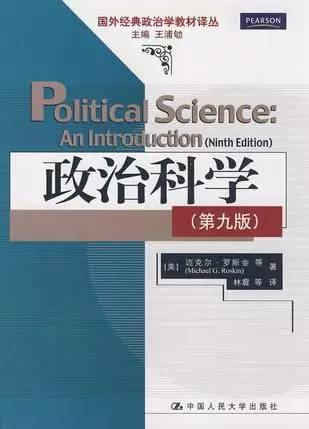
政治科学
作者:[美] 迈克尔·罗斯金 等
译者：林震 / 王锋 / 闭恩高
中国人民大学出版社
这本书非常便于了解政治学的基本问题、基本概念，而且提出了学科相关的问题，有引导和启发兴趣的作用，是为政治学入门读物。
3. 心理学
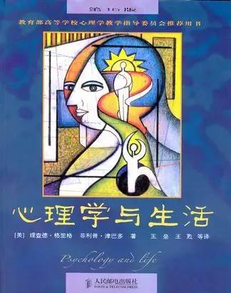
心理学与生活
作者: [美] 理查德·格里格 / 菲利普·津巴多
译者：王垒 / 王甦 等
人民邮电出版社
不用多解释。
4. 逻辑学
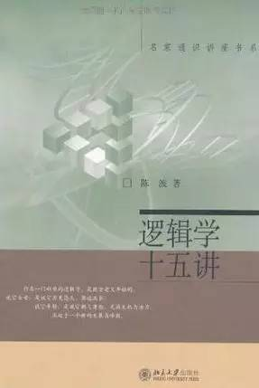
逻辑学十五讲
作者:陈波
北京大学出版社
逻辑学也是个大坑，这本感觉比较浅显和基本，适合入门。
5. 经济学
经济学原理
（宏观经济学分册、微观经济学分册）
作者: [美] N.格里高利·曼昆
译者：梁小民 / 梁砾
北京大学出版社
世界上最流行的经济学教材，条理清晰，易于理解。不用多解释。
6. 科普
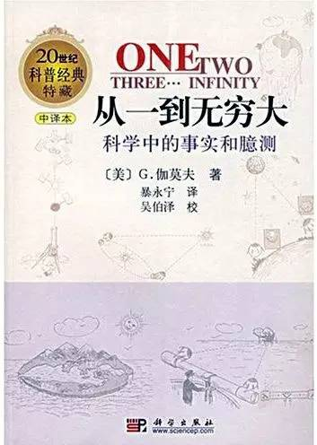
从一到无穷大
作者: [美] G. 伽莫夫
译者：暴永宁
科学出版社
被公认的经典科普著作，不仅通俗易懂，有趣味、有故事性，还同时能传达科学的思维方法和基于科学的世界观，对提高科学素养很有助益。
7. 科学史
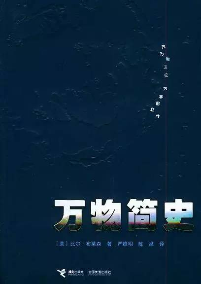
万物简史
作者: [美] 比尔·布莱森
译者：严维明 / 陈邕
接力出版社
看完这本书，有人感觉世界观、人生观都被刷新了！
8. 美术史
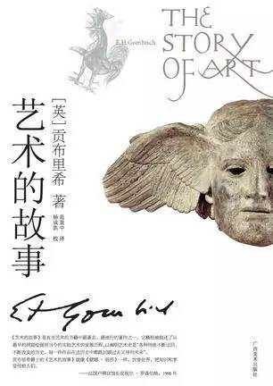
艺术的故事
作者: [英] 贡布里希
译者：范景中 / 杨成凯
广西美术出版社
不用多解释。
9. 哲学
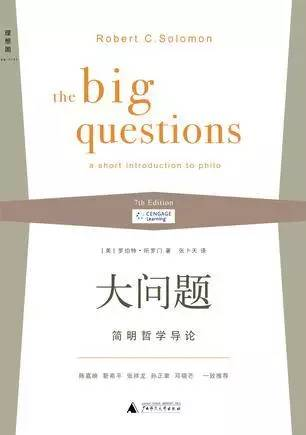
大问题
作者：[美] 罗伯特·所罗门
译者：张卜天
广西师范大学出版社
以哲学基本问题划分章节，结合讨论“做哲学”的方式很适合行外读者，而且也传达出了研究哲学的基本态度。
10. 伦理学
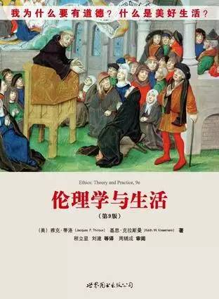
伦理学与生活
作者：[美] 雅克·蒂洛 / [美] 基思·克拉斯曼
译者：程立显 / 刘建 等
世界图书出版公司
这本书直接面对日常生活的道德疑难，真诚的探询和反思，富有哲学意味。
11. 中国史
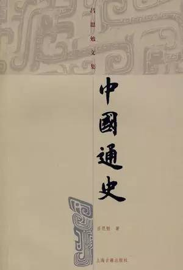
中国通史
作者：吕思勉
上海古籍出版社
从宏观角度梳理了中国历史的演变，文化为经、政治为纬，编织成网，也颇能感受到史学研究的大家态度。
12. 世界史

全球通史
作者：(美) 斯塔夫里阿诺斯
译者：吴象婴 / 梁赤民 / 董书慧 / 王昶
北京大学出版社
不用多解释。
13. 互联网与创业
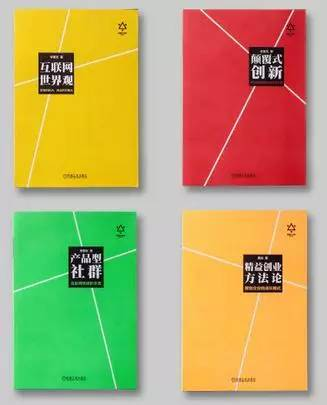
登高四书
作者：李善友 / 龚焱
机械工业出版社
书名已为自己代言。
14. 广告
一个广告人的自白
作者：大卫•奥格威
中信出版社
不用多解释。
15. 品牌营销
超级符号就是超级创意
作者：华杉 / 华楠
天津人民出版社
传说中的“华与华方法”首次结集，本土营销界第一套成体系的营销思想。
16. 建筑史
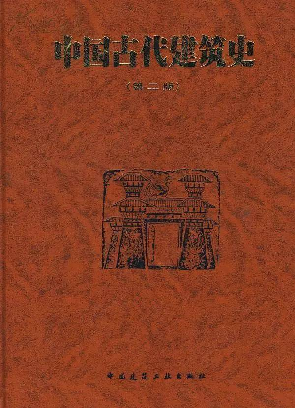
中国古代建筑史
作者：刘敦桢
中国建筑工业出版社
语言通俗，深入浅出，文字不多，图很充分，读起来不至于太损耗耐心。执笔人都是大牛：梁思成、刘敦桢、刘致平、陈明达、陈从周、王世仁、赵立瀛、潘谷西、郭湖生、罗哲文及卢绳，后来的中国工程院院士傅熹年先生，在当时仅是绘图员。可见此书分量。
17. 地理学
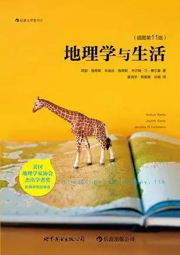
地理学与生活
作者：[美] 阿瑟·格蒂斯 / 朱迪丝·格蒂斯 / 杰尔姆·D·费尔曼
译者：黄润华 / 韩慕康 / 孙颖
世界图书出版公司·后浪出版公司
美国大学的地理教材，除了深度和广度，最重要的是它“有意思”。
18. 法学
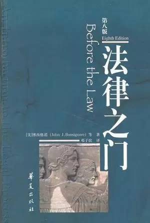
法律之门
作者：[美] 博西格诺 等
译者：邓子滨
华夏出版社
一番纠结后，书单君还是选择了这一本。这是美国各大学法学院比较通用的一本法律教科书，全面介绍了英美法，描述了英美法的整个适用过程，将法理、判例、资料甚至文学素材有机地结合起来，采取讨论的方法陈述法理。说是入门，但读起来并不一定轻松容易。
19. 设计
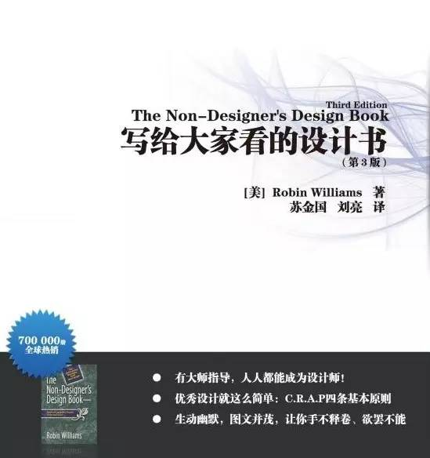
写给大家看的设计书
作者：[美] Robin Williams
译者：苏金国 / 刘亮
人民邮电出版社
清晰地为读者揭示出优秀设计所遵循的4个基本原则：亲密性、对齐、重复和对比。对于设计这样实践为重的领域，这本书很适合对设计有兴趣的读者，也适合要与设计师打交道的“甲方”们。
20. 天文学
大众天文学
作者：[法] C.弗拉马里翁
译者：李珩
广西师范大学出版社
诞生于1880年，时间检验过的经典，被誉为“法国图书馆镇馆之宝”！